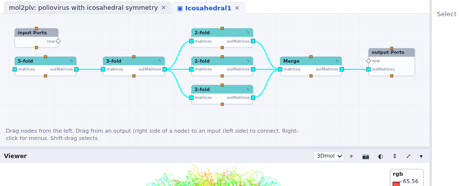

A virus capsid from one protomer
Read a molecule, draw its backbone, color it by a property of its atoms, and draw it 60 times with the icosahedral symmetry of the capsid.
PDB entry 2PLV is poliovirus (type 1, Mahoney strain). The file holds one protomer of the capsid
(the four proteins VP1 to VP4) placed in the icosahedral frame: the 60 rotations of an icosahedron
build the whole capsid from it. Open start here (its folder holds 2plv.pdb).
Read and draw the molecule
- With Libraries…, load Molecules and 3D Visualization.
- Drag a Read Molecule node (Molecules > Input) and choose
2plv.pdbwith its file widget. Right-click itsmoloutput and choose Show data to see what it sends: a MolKit2 molecule (Vision's introspect data showed its fields too). - Drag a Select node (Molecules > Filter), connect the molecule to its
nodesinput, and typename CA C N: the backbone atoms. (Select takes ProDy's selection language, or MolKit's.) - Drag a Lines node (Molecules > Mapper) and connect the selection to its
atoms. - Drag a Viewer node (3D Visualization > Output) and connect Lines'
linesto itsgeometries. A 3D panel opens under the network, and fits the molecule in its view.
In Vision this was the Lines Macro, a macro that computed the bonds,
selected the atoms, built the lines and made a geometry; its nodes were inside it, and coloring or
copying the lines meant opening it and connecting inside. Here Lines is one node, with
inputs for the colors, the opacity and the copies.
Color by the x coordinate
- Drag an Extract Atom Property node (Molecules > Input), connect the selection to
its
atoms, and choose the propertycoords[0]: the x coordinate of each atom. - Drag a Color Map node (3D Visualization > Mapper) and connect the property
values to its
values. It turns each value into a color, from blue (the smallest) to red (the largest). - Connect Color Map's
colorsto Lines'colors. There are as many colors as atoms, so each atom gets its own. - Connect Color Map's
legendto the Viewer: the color bar and its range appear over the view. Drag it where you want it; right-click it for its options (see Color maps and legends).
The capsid
- Load the SymServer library and drag Icosahedral1 (SymServer > Macro). It outputs the 60 matrices of the icosahedral group.
- Connect its
Merge_outMatricesto Lines'instanceMatrices. Lines draws one copy of the backbone per matrix: the whole capsid.

Checkpoint mol2plv: poliovirus with icosahedral symmetry
Inside Icosahedral1
Icosahedral1 is a macro of the SymServer library: double-click it. The 5-fold axis makes 5 matrices, and the 3-fold axis turns them into 15. Three 2-fold axes then turn these 15 about three perpendicular axes (one of them also keeps the 15 it got), and Merge collects the 60.

The saved tutorial network (
mol2plv_net.py) also changed the
inside of Icosahedral1, adding a translation driven by an iterate node to pull the copies apart
frame by frame. The importer does not carry over changes made inside a library's macro; it reports
them. The checkpoint network is the one this page builds.